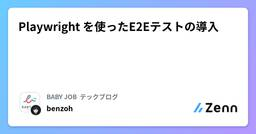
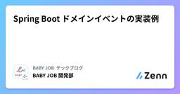
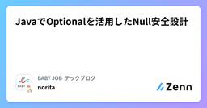
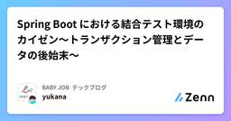
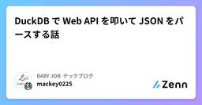
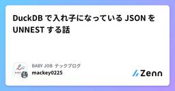

BABY JOB テックブログのフィード
https://zenn.dev/p/babyjob
私たち BABY JOB は、子育てを取り巻く社会のあり方を変え、「すべての人が子育てを楽しいと思える社会」の実現を目指すスタートアップ企業です。圧倒的なぬくもりと当事者意識をもって、こどもと向き合う時間、そして心のゆとりが生まれるサービスを創出します。https://baby-
フィード
【Git】Vimでいくつかのコミットを1つにまとめる方法
BABY JOB テックブログのフィード
!この記事は BABY JOB Advent Calendar 2024 の 20 日目の記事です。 はじめにGitで複数のコミットをまとめて、コミットメッセージを変更するように指示されたときに調べても操作方法ががよくわからず詰んだので、私と同じように詰んでる人がいるんじゃないかと思い、記事に残します。Gitで「隣り合ったコミット」をまとめる方法Gitで「隣り合っていないコミット」をまとめる方法この2点について説明していきたいと思います✨!以下の変更操作はVimで行っています。他のエディタを使用される方が適宜読み替えてください🙇♀️使用マシン：MacBook...
2分前
GoogleカレンダーとGASを使ってテスト環境の利用調整をスマートにした
BABY JOB テックブログのフィード
!この記事は BABY JOB Advent Calendar 2024 の 20 日目の記事です。 はじめに弊社ではAWS上にテスト用の環境を用意しています。テスト環境を検証などで占有したい場合にはプロダクトに関わるメンバーにその旨の連絡や調整が必要です。この記事では、テスト環境利用調整の運用フローを見直したことについて書きたいと思います。 これまでの運用Slackの専用チャンネルに、目的と利用したい日時を投稿するのみでした。↓イメージ↓【利用調整】xxxの動作確認のため開始：2024/12/22 13:00終了：2024/12/22 15:00 課題...
2分前

Playwright を使ったE2Eテストの導入
BABY JOB テックブログのフィード
!この記事は BABY JOB Advent Calendar 2024 シリーズ1の19日目の記事です。 はじめにこの春よりフロントエンドエンジニアとしてキャッシュレス決済サービス「誰でも決済」の開発に携わっております、benzoh です。そしてこの夏、無事にサービスをリリースすることができました！この記事では開発開始から今日までに取り組んだことの中で「Playwright を使ったE2Eテストの導入」について共有したいと思います。特に、QRコードを活用した決済フローのテスト自動化について、実践的な知見を交えながら解説していきます。なお、本記事は Playwright...
1日前

フル出社からフルリモートになった話
BABY JOB テックブログのフィード
!この記事は BABY JOB Advent Calendar 2024 の 19日目の記事です。 はじめに私はBABY JOBに参画して約３ヶ月の新米社員で、地方在住でのフルリモートで勤務しています。今回が初めての転職で、前職でも同じくWebサービスを開発していましたが、フル出社でした。勤務形態の変化と、変化を通して見えてきたこと、感じたことについて共有します。フルリモートを経験していない読者の参考になれば幸いです。 入社前の開発体制前職ではいわゆるウォーターフォール開発を行っていました。５〜６人ほどのチームで毎日朝夕のミーティングを対面で行い、毎週金曜日に全体...
1日前
EntityGraphのバグに遭遇した話
BABY JOB テックブログのフィード
!この記事は BABY JOB Advent Calendar 2024 の 18 日目の記事です。 何が起こったかSpring Bootを2.7から3.1にアップグレードしたところ、EntityGraphを使用した場合の動作が変化し、期待通りの結果が取得できなくなりました。具体的には、不要な2重のJOIN がクエリ内で生成される問題が生じました。Spring Bootのアップグレードに伴い、Hibernateのアップグレードも必要だったので、あわせてHibernateを5.6.1から6.4.0に変更しました。この変更が問題の要因となったようです。 EntityGrap...
2日前
インセプションデッキ初作成の道 〜我々はなぜここにいるのか〜
BABY JOB テックブログのフィード
!この記事は 目標づくり Advent Calendar 2024 の 18 日目の記事です。 はじめに「インセプションデッキ初作成の道」シリーズ、第2弾の記事です。今回は、インセプションデッキの最初の質問『我々はなぜここにいるのか？』に取り組んだ様子をお届けします。インセプションデッキの構成要素と今回フォーカスする質問本シリーズの序章も執筆しているのでコチラもご覧ください。https://zenn.dev/babyjob/articles/caee0c8bf777ebこの問いは、チームとしての「目的」を共有し、共通の方向性を見出すための重要なステップです。私たちはこ...
2日前
開発チームで使っているNotionのスプリントボードを魔改造した話②
BABY JOB テックブログのフィード
!この記事は BABY JOB Advent Calendar 2024 の 18 日目の記事です。こんにちは。BABY JOB株式会社 開発部手ぶら登園開発課の こめつぶ です。弊社では、チーム制を導入し、スクラムで開発を行っています。スクラムとは、アジャイル開発手法の一つで、短い期間（スプリント）でソフトウェアを開発する手法です。手ぶら登園開発課では 1スプリント=1週間 として、日々ビジネスからの要望による機能の追加や改修を行っています。こちらは、そんなスプリントでの作業を管理するために使用しているNotionで私がしれっと（勝手に）やっている魔改造について紹介した...
2日前
Lombokのご紹介
BABY JOB テックブログのフィード
!この記事は BABY JOB Advent Calendar 2024 の 17 日目の記事です。 はじめにこんにちは！本日はJavaの便利なライブラリLombokを紹介します!Project LombokLombokはJavaのライブラリーです。アノテーションを付与することによって部分的にコードを自動で生成してくれるようになります。自動生成はコンパイル時に行われます。導入方法については割愛します。 Lombok 厳選してご紹介それぞれのリンク先で詳しい解説があります。 valアノテーションだと冒頭にいいましたが、こちらは型の代わりとして宣言でき...
3日前
インセプションデッキ初作成の道 〜序章〜
BABY JOB テックブログのフィード
!この記事は BABY JOB Advent Calendar 2024 の 17 日目の記事です。 はじめにチームを構成するメンバーで、全く同じ考え方・価値観を持っている人は一人としていません。『アジャイルチームによる目標づくりガイドブック』小田中育生https://amzn.asia/d/gP6p7Y8皆さんは、この考え方を意識できていますか？私はこの一文を読んだとき、チームづくりにおける大前提だと感じました。チームで成果を出す以上、価値観が一致しているほど物事はスムーズに進み、成果を出しやすいかもしれません。しかし、現実的には、価値観や考え方を完全に統一する...
3日前
作ろう 生成 AI Slack 画像 Bot ~ Amazon Nova Canvasと共に ~
BABY JOB テックブログのフィード
!この記事は BABY JOB Advent Calendar 2024 の 16 日目の記事です。 はじめに本記事では、Amazon Bedrock から生成した画像を Slack に通知する画像 Bot を AWS CDK を使って作成していきます。画像生成に用いる基盤モデルには、せっかくなので AWS re:Invent 2024 で発表された Amazon Nova Canvas を利用していきます。Amazon Bedrock および Amazon Nova Canvas については下記資料で解説されておりますので、そちらをご確認ください。Amazon Bedr...
4日前

Spring Boot ドメインイベントの実装例
BABY JOB テックブログのフィード
!この記事は BABY JOB Advent Calendar 2024 の 16 日目の記事です。 はじめに本記事では、Spring Bootを使用したドメインイベントの実装方法についてコード例を交えながら紹介します。 ドメインイベントとはドメインイベントはドメインモデル内で重要な出来事（イベント）を表現し、他のコンポーネントに通知するための仕組みです。イベントをトリガーとして、関連するビジネスロジックを実行することが可能です。例えば、ユーザーが新規登録した際にイベントを発行しそれを受け取った別のコンポーネント（イベントハンドラー）がウェルカムメールを送信するという...
4日前
エンジニアも伝え方が9割らしいってよ 1
1
BABY JOB テックブログのフィード
本記事は、PHPカンファレンス沖縄2024で行った以下発表をテキストベースでまとめなおしたものです。https://speakerdeck.com/ykanoh/90-percent-of-what-engineers-need-is-communication-skills発表当時は「いろいろなところで取り上げられている内容をエンジニア向けにしたものだし...」と思っていたのですが、発表してから仕事をしていると、意外とこの話を引き合いに出すタイミングが多く、せっかくだから文字に起こして繰り返し見てもらえるようにしようと思った次第です。また、この内容をまとめるきっかけをいただいた...
5日前

JavaでOptionalを活用したNull安全設計 1
BABY JOB テックブログのフィード
!この記事は BABY JOB Advent Calendar 2024 の 15 日目の記事です。 はじめにプログラムにおけるnullの扱いは、長年にわたり多くのエラーの原因となってきました。これは10億ドルの誤り[1]とも言われるほど、多くのシステムに悪影響を与えてきました。この課題を解決するため、近年のプログラミング言語（例：Kotlin、TypeScriptなど）ではNull安全が言語仕様として取り入れられています。これらの言語では、型システムでnullを許容する場合と許容しない場合を明示的に区別することで、開発者が安全にコードを記述できる仕組みを提供しています。一...
5日前
リモート × 飲み会 〜リアリティを求めてうまれた制約と誓約〜
BABY JOB テックブログのフィード
!この記事は BABY JOB Advent Calendar 2024 の 14 日目の記事です。 前提（チームの状況）フルリモートで仕事をしていると、飲み会をやるときは必然的にリモート飲み会になります。でも、実際にやってみると「なんか違う。。」と感じること、ありませんか？オフラインの飲み会のような自然な盛り上がりが出づらかったり、会話が偏ったりするんですよね。これはイメージです。実在の人物・団体とは一切関係ありません。そんな中、最近、特別なリモート飲み会を開催しました。離任メンバーを送るお別れ会です。せっかくの機会なので、「これはひと工夫して成功させたい！」と思い、気...
6日前

Spring Boot における結合テスト環境のカイゼン〜トランザクション管理とデータの後始末〜
BABY JOB テックブログのフィード
!この記事は BABY JOB Advent Calendar 2024 の 14 日目の記事です。 はじめに2 日目に引き続き、結合テストのカイゼンについての話です。https://zenn.dev/babyjob/articles/b155f1f8bcb6db今回は、データベースのトランザクション管理とデータの後始末についてカイゼンしたことをご紹介します！ 環境Java 17Spring Boot 3.3.6Spring Boot Starter Data JPA 3.3.6MariaDB 10.6.14 背景 カイゼン前の結合テスト次のような...
6日前
ふりかえりカンファレンスきっかけで、好きなふりかえり手法に出会えた 1
BABY JOB テックブログのフィード
!この記事は ふりかえり Advent Calendar 2024 の 13日目の記事です。こんにちは〜！BABY JOB株式会社のたかしろです。私は普段、"Scrum Master as a Project Manager" [1]という役割を自称し、手ぶら登園というサービスの開発に従事しています。今回は、2024年4月に参加したふりかえりカンファレンスがきっかけで、好きなふりかえり手法に出会うことができたので、経緯を含め紹介したいと思います。 はじめに：結論YWTええやん〜！です。それに至った経緯を、主観MAXでつらつら書きます。 きっかけ①：ふりかえりカンファ...
7日前

DuckDB で Web API を叩いて JSON をパースする話 3
BABY JOB テックブログのフィード
!この記事は BABY JOB Advent Calendar 2024 の 13 日目の記事です。!この記事は以下の記事の後編に相当します。DuckDB で 入れ子になっている JSON を UNNEST する話こちらも併せて見ていただけると幸いです。 前座今日は12月13日の金曜日です。そう、13日の金曜日。。。だから、ジェイソン。。。 JSON に関する話をします！ウォー！とはいえ、JSON で一本記事を書くのは難しかったので、DuckDB で JSON を触ってみた話（後編）をします。[1]!使用する DuckDB は現在の最新版 1.1.3 をベー...
7日前

DuckDB で入れ子になっている JSON を UNNEST する話 4
BABY JOB テックブログのフィード
!この記事は BABY JOB Advent Calendar 2024 の 13 日目の記事です。!この記事は以下の記事の前編に相当します。DuckDB で Web API を叩いて JSON をパースする話こちらも併せて見ていただけると幸いです。 前座今日は12月13日の金曜日です。そう、13日の金曜日。。。だから、ジェイソン。。。 JSON に関する話をします！ウォー！とはいえ、JSON で一本記事を書くのは難しかったので、DuckDB で JSON を触ってみた話（前編）をします。[1]!使用する DuckDB は現在の最新版 1.1.3 をベースに...
7日前

レコード数の多いテーブルのカラム追加は遅い？ MariaDBで誤解されがちなスキーマ変更
BABY JOB テックブログのフィード
!この記事は BABY JOB Advent Calendar 2024 の 12日目の記事です。 はじめにデータベース運用では、「テーブルスキーマ変更はレコード数が多いほど処理時間がかかる」という印象を持っている方も多いかもしれません。しかしMariaDBでは一部のスキーマ変更がレコード数に依存せず、数千万レコード規模のテーブルでも即時に完了するケースがあります。本記事ではMariaDBにフォーカスして、どのような操作がレコード数に影響されどのような操作が即時完了するのかを、実測しながら検証したいと思います。 準備まずは、ダミーのテーブルを作成して、1,000万レコ...
8日前
Metabaseって何ができるの？ 〜導入提案時にチームメンバへ伝えたいこと〜
BABY JOB テックブログのフィード
!この記事は BABY JOB Advent Calendar 2024 の 11 日目の記事です。 はじめにBABY JOB のY-Kanohです。入社してまだ半年程度ですが、「アドベントカレンダーがある」と言われたら参加しないわけにはいかないでしょう！！何を書こうか迷ったのですが、最近導入を検討している Metabase の紹介をします！（最近はチーム内の課題解消や仕様設計がメインで、たまに実装をやる感じの業務なのですが、せっかくのアドベントカレンダーですし、エンジニアとして1記事ぐらいは技術系にしないとね笑）Metabase自体はすでにメジャーなBIツールかと思...
9日前